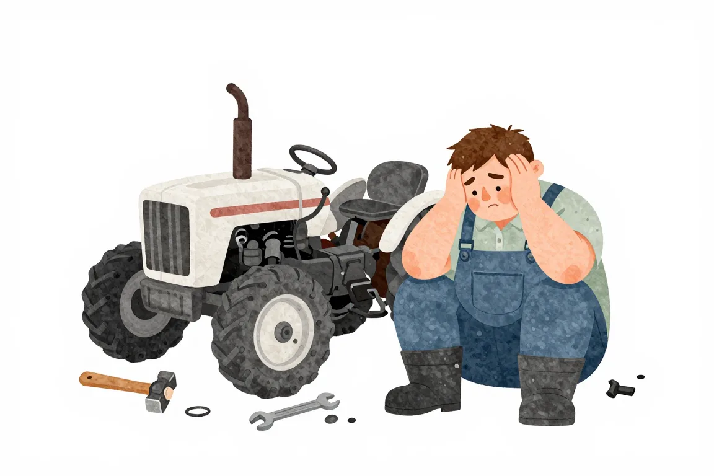
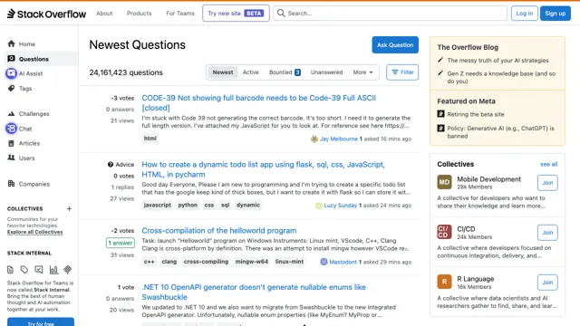

Řešení problémů během programování#
Je velmi těžké se učit zcela bez cizí pomoci. I drobný zádrhel tě může zaseknout na týdny a úplně ti zkazit radost z učení. Neboj se ptát online, radit se s lidmi na akcích, nebo si najít mentora.

Kde a jak se ptát#
Neboj se ptát, ale zároveň se nauč formulovat dotazy správně. Žádná otázka není hloupá, může však být hloupě položená. Než se někde začneš ptát, přečti si nejslavnější návod na internetu o psaní dotazů, nebo alespoň tento krátký návod od Stack Overflow.

Ptej se v klubu pro začátečníky, kde najdeš nejen pomoc, ale i motivaci, kamarády, práci.

Stack Overflow
Ptej se na celosvětově největším webu s otázkami a odpovědmi ohledně programování.
Ptej na se české a slovenské Python komunity na Facebooku.
Programátoři začátečníci
Ptej se ve Facebookové skupině pro začátečníky v programování.
Ptej na Discordu české a slovenské Python komunity.
Pokládej dotazy komunitě pro začátečníky s Pythonem.
Pokládej dotazy komunitě pro začátečníky v programování.
Kapitola se teprve připravuje.

Máš otázky? Chceš probrat svou situaci?
Na junior.guru Discordu si pomáhá 261 lidí, které zajímá svět IT juniorů. Začátečníci, kteří hledají komunitu a podporu. Senioři s chutí sdílet své zkušenosti. K tomu pravidelné online akce a mnoho dalšího.
Konkrétně v kanálu #poradna se v poslední době napsalo 31.097 písmenek měsíčně.